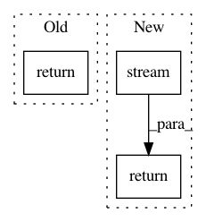

6887ad8bac178483b7debcefa1c52de979ec0085,ffmpeg/_filters.py,,filter_,#Any#Any#,9
Before Change
``ffmpeg.input("in.mp4").filter_("hflip").output("out.mp4").run()``
return FilterNode([parent_node], filter_name, *args, **kwargs)
def filter_multi(parent_nodes, filter_name, *args, **kwargs):
Apply custom multi-source filter.
After Change
``ffmpeg.input("in.mp4").filter_("hflip").output("out.mp4").run()``
return filter_multi_output(stream_spec, filter_name, *args, **kwargs).stream()
@filter_operator()
def setpts(stream, expr):
In pattern: SUPERPATTERN
Frequency: 3
Non-data size: 3
Instances
Project Name: kkroening/ffmpeg-python
Commit Name: 6887ad8bac178483b7debcefa1c52de979ec0085
Time: 2017-07-06
Author: karlk@kralnet.us
File Name: ffmpeg/_filters.py
Class Name:
Method Name: filter_
Project Name: kkroening/ffmpeg-python
Commit Name: 6887ad8bac178483b7debcefa1c52de979ec0085
Time: 2017-07-06
Author: karlk@kralnet.us
File Name: ffmpeg/_filters.py
Class Name:
Method Name: setpts
Project Name: kkroening/ffmpeg-python
Commit Name: 497105f929a7a927ee8807519738f48c49b5a3a1
Time: 2018-01-09
Author: davide@depau.eu
File Name: ffmpeg/_ffmpeg.py
Class Name:
Method Name: map